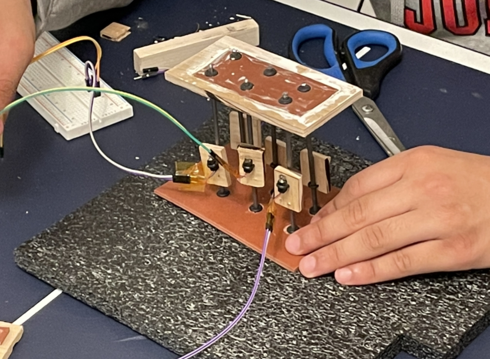
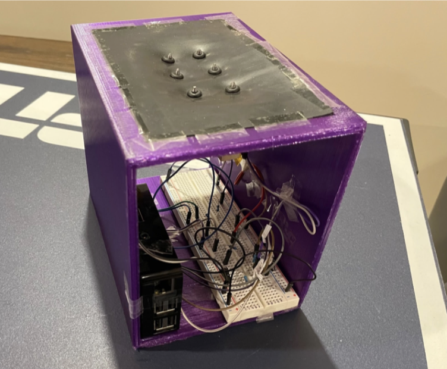

Taught by Dr. Crowthers.
STEM II is a group project that takes place over the second half of the year. In this project, groups are tasked with creating an assistive technology device for elders or people with impairments. Throughout this project, groups are tasked with brainstorming, designing, prototyping, and eventually presenting their final designs in a fair format.
Problem Statement
Over 12 million people in the US suffer from some form of visual impairment, with over 1
million being blind. Studies have shown that blind people suffer from a lower quality of life,
mainly due to a lack of ability to read many things, such as books or websites.
While there currently exist options for reading large amounts of Braille, such as refreshable Braille displays, these devices are very costly, averaging around $2000 each. Thus, many people with visual impairments or blindness do not have access to technologies for reading Braille from digit inputs. Other alternatives include Braille books, which are bulky, expensive, and limited in selection. Thus there is a need for an affordable device which can display Braille from a digital input in a refreshable manner.
Design Approach
In our design, we sought to replace the method of extending and retracting Braille dots with haptic feedback sourced from miniature vibration motors. This would allow for a cheaper device that could still produce refreshable outputs. Leading up to our final designs, we first attempted to engineer a frame for our Braille cell that could dampen and isolate vibrations, so that each Braille dot’s haptic feedback could be discernible.
Our design progressed from a wooden slab with embedded paper clips representing the Braille dots, to a rubber sheet housed in a wooden frame with more robust steel rods, to finally a fully-encapsulated 3D-printed frame with a rubber sheet containing rubber grommets that could fully isolate the vibrations.
For the software, we were able to attach a Raspberry Pi to our device, which is able to run Linux Shell Scripts, as well as Python Scripts. Combined with an open-source grade 2 Braille translation software, known as Liblouis, our scripts are able to take in digital input and send haptic feedback to the user through the device.
Shown are three stages of our design progress, with our final design shown to the right.



Our first prototype, made of wood.
Our second prototype, made with rubber.
Our final device, 3D printed.